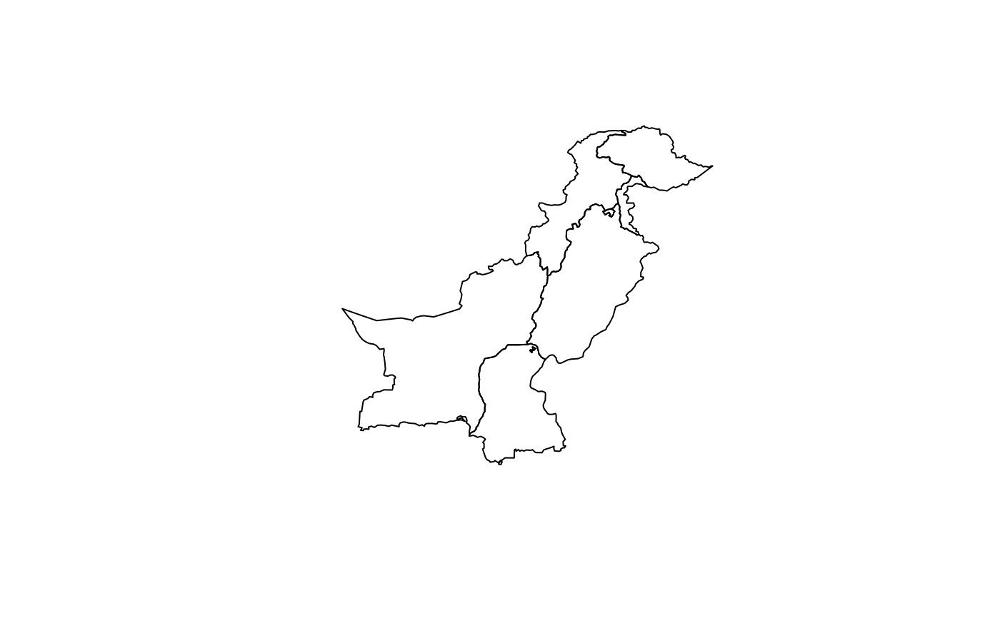

Get Pakistan province boundaries
Arguments
- crs
Integer EPSG code. Default 4326 (WGS84). Use 32642 for distance and area calculations. See
pk_crs_suggest()for guidance.
Value
Returns an sf object (class "sf" and "data.frame") with:
- province_name
Character. Name of the province (e.g., "Punjab", "Sindh")
- province_code
Character. Unique province identifier code
- area_km2
Numeric. Area in square kilometres for each province
- geometry
MULTIPOLYGON. Province boundary geometries
The output represents the administrative boundaries of Pakistan's provinces and territories.
Examples
provinces <- get_provinces()
plot(sf::st_geometry(provinces))

head(provinces)
#> Simple feature collection with 6 features and 3 fields
#> Geometry type: MULTIPOLYGON
#> Dimension: XY
#> Bounding box: xmin: 60.8786 ymin: 24.89269 xmax: 77.83397 ymax: 37.0848
#> Geodetic CRS: WGS 84
#> province_name province_code area_km2 geom
#> 1 Azad Kashmir PK1 11471.7184 MULTIPOLYGON (((74.86488 34...
#> 2 Balochistan PK2 347667.2995 MULTIPOLYGON (((70.28751 31...
#> 3 Gilgit Baltistan PK3 70226.3158 MULTIPOLYGON (((74.86488 34...
#> 4 Islamabad PK4 904.0617 MULTIPOLYGON (((73.16847 33...
#> 5 Khyber Pakhtunkhwa PK5 100987.6062 MULTIPOLYGON (((73.63955 36...
#> 6 Punjab PK6 205759.3130 MULTIPOLYGON (((73.51201 34...